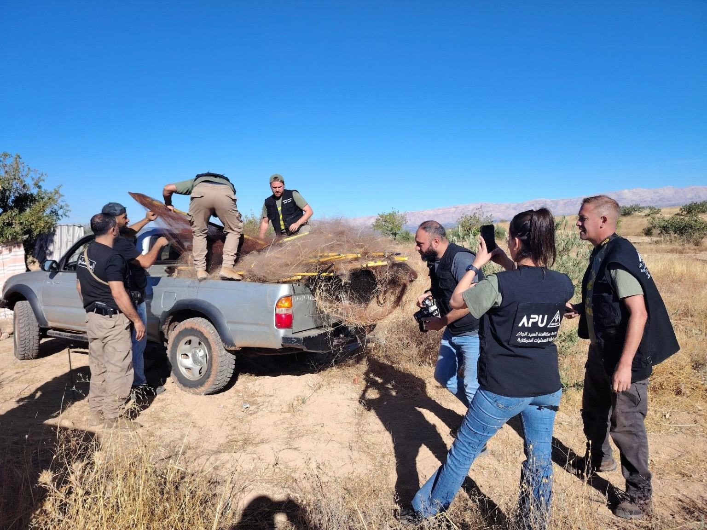
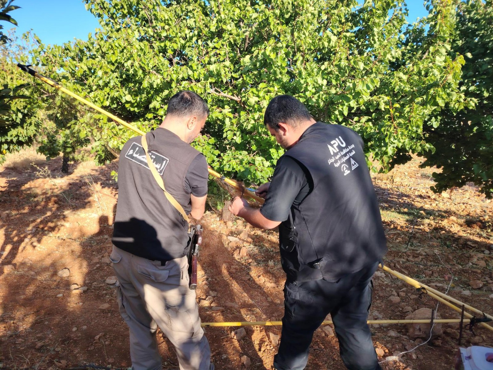
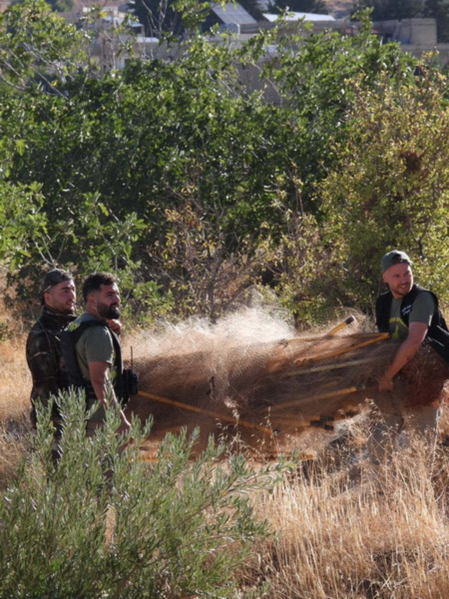
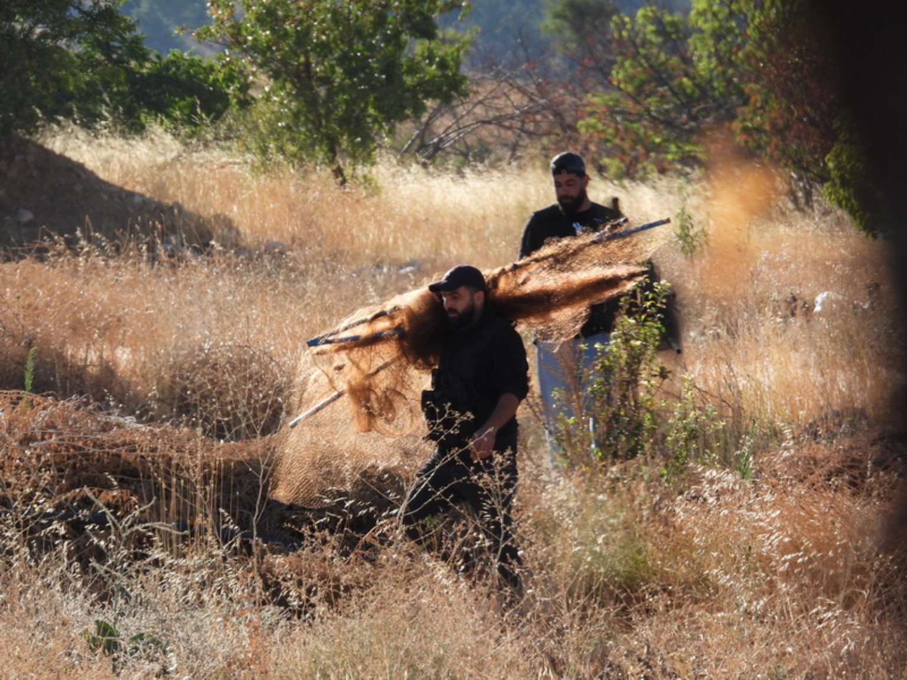
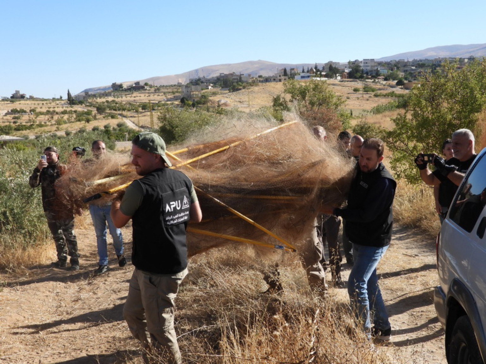
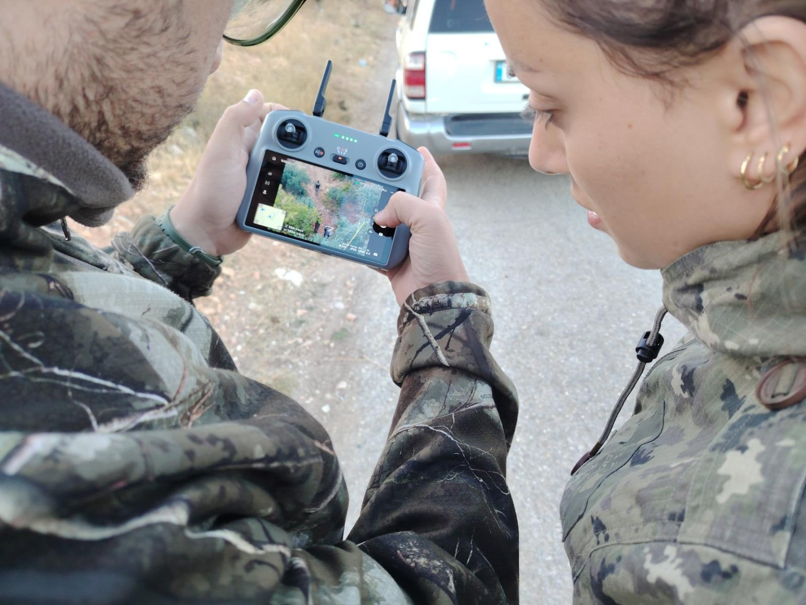
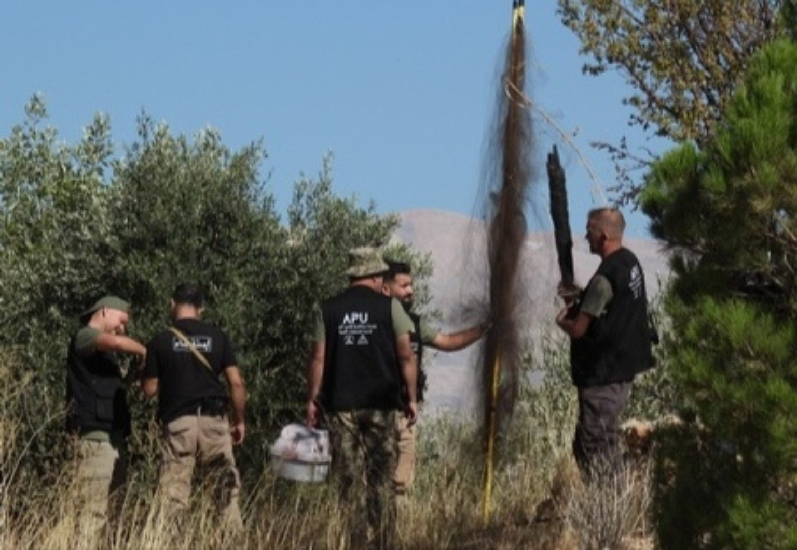

Field footage of operations to dismantle illegal bird-trapping nets in northern Bekaa.
The Bekaa Investigation Detachment of the Regional Gendarmerie Unit, under the Bekaa Area Command, carried out an exceptional field operation in cooperation on the ground and through information sharing with the joint Lebanese–international operations team of the Anti-Poaching Unit APU (MECSHAP–CABS). The operation resulted in the removal of an additional 17,640 square metres of bird-killing nets used for illegal hunting and the indiscriminate killing of birds, bringing the campaign’s overall total to 38,280 square metres.
The missions, conducted over several days, covered Younine, Labweh, Arsal, Ras Baalbek, Mashari‘ al-Qaa, al-Kuwaitiya, Jabouleh, Jadidat al-Fakiha and the highlands of Nahleh. Numerous violation sites were identified and reached, and the seized nets were removed. After each mission, the seized material was handed over to the relevant units in accordance with established procedures.
The operation was marked by a high level of professionalism, precise field coordination and rapid detection and intervention. The Bekaa Investigation Detachment also used a drone to survey the areas, spot nets from the air and locate them quickly and clearly, helping teams reach violation sites faster and carry out field interventions more efficiently.
The mission was coordinated administratively and in media matters with the Bekaa Area Command, the Public Relations Division and the Gendarmerie Command operations room of the Internal Security Forces. Members of the Ras Baalbek police station also took part on the ground in removing some of the seized nets, as part of cooperation and coordination between the units concerned.
A number of sustainable hunters in the Bekaa also contributed the field information needed to identify violation sites and locate the nets.
This was not the first such cooperation. A similar operation last year resulted in the removal of approximately 8,000 square metres of nets. It was considered at the time the largest net-removal operation in Lebanon and the largest in the roughly fifty-year history of the international organisation CABS.
The current operation, which removed an additional 17,640 square metres of nets over three days and brought the campaign’s overall total to 38,280 square metres, sets an exceptional new field record and underscores the importance of cooperation between security forces, specialist teams and sustainable hunters in confronting illegal hunting and protecting birds and wildlife in Lebanon.
The total in the official bulletin
In its bulletin of 8 October 2026, the Directorate General of the Internal Security Forces explained that the campaign’s overall total was 38,280 square metres: 20,640 square metres removed in the first phase, followed by an additional 17,640 square metres removed over three days. The bulletin reported the participation of APU (MECSHAP–CABS), the use of a drone and contributions of field information from sustainable hunters.
Directorate General of the Internal Security Forces bulletin — 8 October 2026






Material and photographs: Adonis Elkhateeb, Editor-in-Chief / Sayd Magazine.
Related reporting

Follow Sayd Magazine on Facebook for more field reporting and responsible hunting coverage